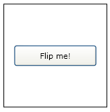
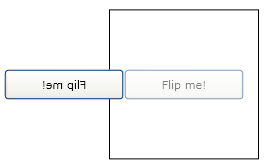
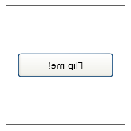
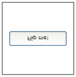

Практическое руководство. Отражение объекта UIElement по горизонтали или вертикали
В этом примере показано, как использовать ScaleTransform перевернуть UIElement горизонтально или вертикально. В этом примере Button управления (разновидность UIElement) изменилось, применяя ScaleTransform для его RenderTransform свойство.
Пример
Ниже показан кнопка для отражения.

UIElement, чтобы отразить
Ниже показан код, создающий кнопки.
<Button Content="Flip me!" Padding="5">
</Button>
Пример
Чтобы отразить кнопку горизонтально, создайте ScaleTransform и задайте его ScaleX свойство в значение -1. Применить ScaleTransform на кнопку RenderTransform свойство.
<Button Content="Flip me!" Padding="5">
<Button.RenderTransform>
<ScaleTransform ScaleX="-1" />
</Button.RenderTransform>
</Button>

Кнопка после применения ScaleTransform
Пример
Как видно из предыдущего рисунка, кнопка была отражена, но также была перемещена. Том, что кнопка была отражена от верхнего левого угла. Чтобы отразить кнопку на месте, необходимо применить ScaleTransform его центр, а не его угла. Простой способ применить ScaleTransform к кнопкам center — присвоить кнопки RenderTransformOrigin значение 0,5, 0,5.
<Button Content="Flip me!" Padding="5"
RenderTransformOrigin="0.5,0.5">
<Button.RenderTransform>
<ScaleTransform ScaleX="-1" />
</Button.RenderTransform>
</Button>

Кнопка с заданным для rendertransformorigin значением 0,5, 0,5
Пример
Чтобы отразить вертикально кнопку, задайте ScaleTransform объекта ScaleY свойства вместо его ScaleX свойство.
<Button Content="Flip me!" Padding="5"
RenderTransformOrigin="0.5,0.5">
<Button.RenderTransform>
<ScaleTransform ScaleY="-1" />
</Button.RenderTransform>
</Button>

Вертикально отраженная кнопка